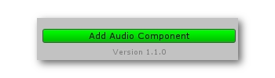
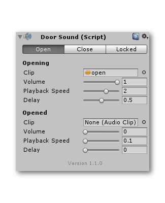

Door Sound
You can easily add audio clips that play along with your rotations. Got to the rotation component on your door, and click on the 'add audio component' to get sounds working in your game.

You'll see a new audio interface that's divided into three tabs. Open, close and locked.
The open tab will control audio clips that get played when you're doing a single rotation, the first rotation of a looped rotation or the primary rotation of a swing rotation.
The close tab will control audio clips that get played when you're doing the second rotation of a looped rotation or the secondary rotation of a swing rotation.
The locked tab will control audio clips that get played when the player attempted to open/close the door but it failed.

You can add in clips that get played at the start of the rotation and clips that get played at the end of the rotation.
Every audio clip has several parameters.
Audio Parameters
| Parameter | Description |
|---|---|
| Clip | The audio clip that will get played. |
| Volume | The volume of the played audio clip. |
| Playback Speed | The playback speed of the audio clip. Equal to the pitch. |
| Delay | A delay on the audio clip to get them to play at exactly the right time. |